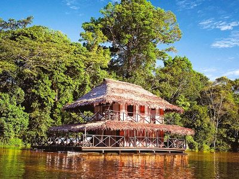
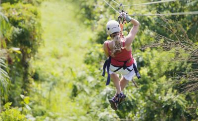
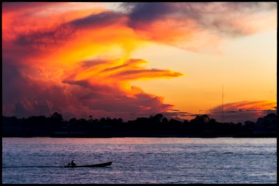

Descubre la Selva Amazónica Colombiana
Bienvenido a una aventura inolvidable en el corazón de la selva amazónica colombiana con Travel Partners Agency. Sumérgete en la exuberante biodiversidad, las culturas indígenas vibrantes y los paisajes impresionantes que te esperan en esta región única del mundo.
Atractivos Turísticos
-
Parque Nacional Natural Amacayacu
Explora la diversidad de flora y fauna en este parque nacional, hogar de jaguares, delfines rosados, y una variedad de aves exóticas. Disfruta de caminatas por la selva, paseos en bote por los ríos y la oportunidad de interactuar con comunidades indígenas locales.
 -
Reserva Natural Tanimboca
Descubre la magia de la selva en esta reserva, donde podrás practicar senderismo, realizar excursiones nocturnas para observar la vida silvestre y experimentar la emoción de la tirolina entre los árboles.
 -
Leticia
Sumérgete en la cultura local en la pintoresca ciudad de Leticia, donde podrás visitar mercados tradicionales, probar la deliciosa gastronomía amazónica y aprender sobre la historia y la artesanía de la región.

Itinerario de 5 días y 4 noches
-
Día 1: Llegada a Leticia
-
1. Llegada al aeropuerto de Leticia y traslado al hotel.
-
2. Tarde libre para explorar la ciudad y disfrutar de la gastronomía local.
-
-
Día 2: Parque Nacional Natural Amacayacu
-
1. Excursión de día completo al Parque Nacional Natural Amacayacu, con caminatas por la selva y paseos en bote por el río Amazonas.
-
2. Visita a una comunidad indígena para aprender sobre su cultura y tradiciones.
-
-
Día 3: Reserva Natural Tanimboca
-
1. Día de aventura en la Reserva Natural Tanimboca, con actividades como senderismo, observación de aves y tirolina entre los árboles.
-
2. Cena tradicional amazónica y fogata nocturna.
-
-
Día 4: Exploración de Leticia
-
1. Visita a los mercados locales y museos en Leticia.
-
2. Oportunidad de realizar actividades opcionales como kayak en el río Amazonas o visita a una reserva de animales rescatados.
-
-
Día 5: Regreso
-
1. Mañana libre para compras de último momento o actividades adicionales.
-
2. Traslado al aeropuerto para el vuelo de regreso.
-
Costo del Viaje
El costo del viaje varía según las preferencias y necesidades individuales de cada viajero. Sin embargo, nuestro paquete básico de 5 días y 4 noches incluye:
-
1. Transporte terrestre y acuático durante las excursiones.
-
2. Alojamiento en hoteles de calidad en Leticia.
-
3. Comidas mencionadas en el itinerario.
-
4. Entradas a parques nacionales y reservas naturales.
-
5. Guías locales expertos.
Para obtener un presupuesto personalizado y más detalles sobre opciones de alojamiento, actividades adicionales y servicios adicionales, no dudes en contactarnos. Estamos aquí para hacer de tu viaje al Amazonas colombiano una experiencia inolvidable. ¡Reserva tu aventura hoy con Travel Partners Agency!